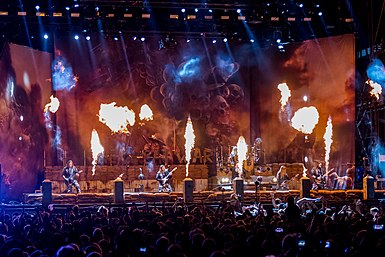

История группы
От образования до первого альбома
Группа Sabaton была сформирована ещё в декабре 1999 года в Фалун, Швеция, когда члены группы под названием Aeon начали реформироваться и готовиться к предстоящей первой записи в Moon Music Studio. Члены-основатели Aeon объединили свои силы с Оскаром Монтелиусом и Йоакимом Броденом в течение года, который видел несколько смен состава, и парни решили начать новую жизнь и изменили название группы на Sabaton. С тех пор и до 2012 года состав группы практически не менялся — в 2001 году к группе присоединился ударник Даниель Мёллбак. В 2012 году состав группы сильно поменялся: из прежнего состава остались только двое. В 2001 году группа была готова для записи нового материала, и на этот раз они обратились к Томми Tегтгрену, который должен был играть определённую роль в создании музыки Sabaton, и вместе они записывают вторую часть демо Fist for Fight, который был выпущен Underground Symphony в том же году.
Primo Victoria
Без поддержки лейбла, Sabaton вернулись в Abyss Studios и записали альбом Primo Victoria, название которого в вольном переводе означает: «первая победа», или «начало победы». В принципе, это название можно считать определяющим стиль и тематику группы — войны. Группа подписала контракт с лейблом Black Lodge в 2005 году, тогда же вышел их первый релиз Primo Victoria. В начале 2005 года, незадолго до выхода альбома, в группу был принят клавишник Дэниель Мюр. До этого фронтмен группы, Йоаким Броден, совмещал игру на клавишных с пением. В 2005 состоялся первый концерт Sabaton за пределами Швеции.
Attero Dominatus, Metalize
В середине 2006 года вышел альбом Attero Dominatus, и группа отправилась в свой первый европейский тур. И хотя тур был непродолжительным, он был настолько успешен, что второй был назначен сразу после первого. У группы осталось время только на то, чтобы приехать в Швецию и провести три шоу с победителями Евровидения-2006, Lordi. Тур Attero Dominatus продолжился в Швеции. С наступлением 2007 года началось новое турне. На этот раз Sabaton выступал вместе с Therion и Grave Digger. Тур проходил также в странах, где они прежде не выступали. Когда группа была в туре с Therion и Grave Digger, переговоры между Black Lodge и Underground Symphony были успешно завершены, и дебютный альбом Sabaton Metalizer, в котором не было ни одной песни о войне, был выпущен в 2007 году, через 5 лет после его записи. На этот раз Sabaton отправился в большой европейский тур, который называется «Metalizing Europe», на котором группа не осталась незамеченной и была главной на многих крупных фестивалях по всей Европе.
The Art of War, рост популярности
В конце 2007 года Sabaton показывается мало, проводя всего несколько концертов, чтобы оставаться в форме, и 3 выступления на европейском турне Немецкой power-metal группы Helloween. Они стали сосредотачиваться на создании нового альбома, The Art of War. Альбом был основан на более чем 2500-летних строках Сунь-цзы, «Искусство войны», и песни должны были следовать той же формуле и делать некоторые фразы из трактата Сунь-Цзы главной мыслью текста. В январе 2007 года группа вернулась в Abyss Studios, снова начали работать с Томми Тэгтгреном для записи, а также участвовал его (Томми) брат, известный продюсер и музыкант Петер Тэгтгрен (Hypocrisy, Pain и др.), для создания «миксов». Сингл Cliffs Of Gallipoli с выходом в свет взлетел на первую строчку шведских чартов, а позже вышел сам альбом. Альбом The Art of War стал коммерчески самым успешным в творчестве группы, получив множество положительных отзывов. Группа была номинирована на шведскую премию «Грэмми». С мая 2008 по декабрь 2009 года Sabaton провели более 160 концертов в более чем 20 странах, группа получила почётное гражданство от польского правительства, гастролировала с HammerFall и Dragonforce.
Coat of Arms и переиздания прошлых альбомов
Несмотря на то, что группа активно гастролировала, творческий процесс не прекращался, и в конце 2009 года группа была готова к записи своего нового альбома Coat of Arms. Во второй половине 2009 года группа обратилась к своим поклонникам с просьбой прислать идеи для них, группа получила тысячи писем и при подготовке к новому альбому, позже они подписали договор с лейблом Nuclear Blast. Студия Moon Music Studio была заброшена в то время, и группа решила создать свою собственную студию на том же месте, и таким образом, группа возвращается туда, где они начали свою карьеру 10 лет назад. Песни и музыка были написаны в 2009 году, и в январе 2010 года группа отправилась обратно в Abyss Studios записывать ударные, на этот раз с Петером Тэгтгреном, а затем возвратились в студию, которую в Sabaton в шутку называли «орлиным гнездом». В начале февраля 2010 года Фредрик Нордстрем, при содействии Эндрю Хейболла, записывает альбом вместе с Sabaton в студии Boomtown, и когда альбом был отшлифован Мастерами Аудио, окончательный альбом Coat of Arms был отправлен в Nuclear Blast. В сентябре 2010 года альбомы Primo Victoria, Attero Dominatus, Metalizer, The Art of War были переизданы. В них появились ранее неизданные песни и live-записи. 12 мая 2011 года группа провела свой первый концерт в России (Санкт-Петербург, Ледовый дворец), выступив на разогреве у легендарных Scorpions. Группа выступила на разогреве у Scorpions и на последующем концерте в России 26 мая 2011 года в московском спорткомплексе «Олимпийский».
Carolus Rex, перемены в группе, Swedish Empire Tour

31 марта 2012 года было официально объявлено о том, что изменяется состав группы. Вместо ушедших гитаристов Оскара Монтелиуса и Рикарда Сундена, ударника Даниеля Муллбэка и клавишника Даниеля Мюра в группу пришли гитаристы Крис Рёланд и Тоббе Энглунд, а также ударник Роббан Бэк. Поиски клавишника продолжаются. 18 апреля 2012 года в свет выходит сборник Metalus Hammerus Rex, a 22 мая — седьмой студийный альбом Carolus Rex, записанный ещё в предыдущем составе. Альбом вышел на шведском и английском языках. В туре по Европе песни с нового альбома исполняются в основном на английском, разве что в Швеции они исполняются на шведском языке. Вышедшие из Sabaton участники основали собственный проект Civil War, и пригласили вокалиста из группы Astral Doors Нильса Патрика Юханссона и басиста Стефана Эриксона. 13 ноября вышел дебютный EP Rome is Falling Бас-гитарист Пер Сундстрём объясняет смену состава группы «недостатком мотивации, желанием посидеть дома». В ноябре 2012 года ударник Роббан Бэк на время покидает группу, чтобы уделить больше внимания родившемуся ребёнку. Вместо него в тур с группой временно отправляется музыкант Сноуи Шоу. На фестивале Metaltown Петер Тэгтгрен выступает вместе с группой в качестве второго вокалиста.
Swedish Empire Live
Heroes
The Last Stand
29 апреля 2016 года на официальном сайте появилась информация о выходе нового альбома. Релиз альбома «The
Last Stand» состоялся 19 августа 2016 года.
В него, как и прежде, вошли песни, посвящённые военным
событиям и героям: Битве при Бэннокбёрне, Бою у высоты 3234, крылатым гусарам и другим.
The Great War
 Логотип альбома
Логотип альбома

Sabaton на Wacken Open Air 2019.
The War To End All Wars
14 августа 2021 года анонсирован альбом The War To End All Wars
Стиль
Группа является одним из основных популяризаторов и распространителей жанра Battle Metal. Несколько
десятков клипов военной тематики были созданы на основе песен Sabaton.Демо-пластинка Fist for Fight, а
также выпущенный в 2007 году Metalizer исполнены в быстром, умеренно агрессивном ключе. Тогда у группы
ещё не было уклона в сторону военной тематики. Первый опубликованный альбом Primo Victoria задал тон
всему последующему творчеству музыкантов: чёткие, стройные гитарные рифы, мелодика клавишных, хоровые
вставки в припевах, характерные жанру хэви-пауэр-метал.
Тематика песен — войны и отдельные сражения
и подвиги. Основное творчество посвящено XX веку. Carolus Rex — концептуальный альбом, посвящённый
Тридцатилетней и Северной войнам. The Last Stand - альбом, в котором песни поются про героические и
зачастую самоубийственные оборонительные битвы (Битва при Сирояме, Фермопильское сражение, Бой у высоты
3234). Тексты песен повествуют в основном об истории войн, а также философии ведения войны (альбом The
Art of War, песня «The Great War»), героизме и доблести солдат (Витольд Пилецкий [«Inmate 4859»]),
упоминаются и некоторые безумные правители и солдаты: (Адольф Гитлер [«Rise of Evil»], Симо Хяюхя
[«White Death»] и другие). Альбом Metalizer, многие песни которого были записаны гораздо раньше, не
имеют определённой тематики, в частности, есть песни, посвящённые назгулам и охоте на ведьм. Также в
альбомах Metalizer, Primo Victoria, Attero Dominatus и Coat of Arms есть песни, посвящённые хэви-металу,
в них обыгрываются названия музыкальных групп и песен, преимущественно классического хэви-метала.
Концерты часто сопровождаются финальными фейерверками, между песнями фронтмен группы Йоаким Броден
активно общается с публикой, создавая непринуждённую атмосферу.
Состав группы
Текущий состав
- Йоаким Броден (Joakim Brodén)-вокал (с 1999), клавишные (1999—2005, с 2012), ритм-гитара, бас-гитара
- Пар Сундстрём (Pär Sundström)-бас-гитара (с 1999), бэк-вокал (с 2012)
- Крис Рёланд (Chris Rörland)-в основном соло-гитара, бэк-вокал (с 2012)
- Ханнес Ван Даль (Hannes Van Dahl)-ударные (с 2013)
- Томми Йоханссон (Tommy Johansson)-ритм-гитара, иногда исполняет сольные партии на гитаре, бэк-вокал (с 2016).
Бывшие участники
- Ричард Ларсон (Richard Larsson) — ударные (1999—2001);
- Рикард Сунден (Rikard Sundén) — соло-гитара, бэк-вокал (1999—2012);
- Оскар Монтелиус (Oskar Montelius) — соло-гитара, бэк-вокал (1999—2012);
- Даниель Муллбак (Daniel Mullback) — ударные, бэк-вокал (2001—2012);
- Даниель Мюр (Daniel Mÿhr) — клавишные, бэк-вокал (2005—2012);
- Тоббе Энглунд (Thobbe Englund) — соло-гитара, бэк-вокал (2012—2016).
Сессионные музыканты
Временная шкала
Дискография
- Primo Victoria (2005);
- Attero Dominatus (2006);
- Metalizer (2007);
- The Art Of War (2008);
- Coat Of Arms (2010);
- Carolus Rex (2012);
- Heroes (2014);
- The Last Stand (2016);
- The Great War (2019).
- The War to End All Wars (2021).
Демо-сбоник
- Fist for Fight (2000).
Сборник лучших композиций
- Metalus Hammerus Rex (2012).
Видеоклипы
- World War Live: Battle of the Baltic Sea (2011);
- Swedish Empire Live (2013).
- Heroes on Tour (2016)
Видеоальбомы
Синглы
Концертные записи
- [Неизвестно] 2001 (Master of the World);
- Sweden Rock Festival 2005 (Primo Victoria);
- Masters of Rock 2007 (Primo Victoria);
- Masters of Rock 2008 (40:1, Panzerkampf);
- Live in Rockstad 2008
- Graspop Metal Meeting 2008;
- Wacken Open Air 2008;
- Bloodstock Open Air 2009;
- Sweden Rock Festival 2010 (Cliffs of Gallipoli);
- Graspop Metal Meeting 2010;
- Hellfest Summer Open Air 2010 (Coat of Arms);
- Summer Breeze Festival 2010 (Cliffs of Gallipoli);
- Masters of Rock 2010 (Price of a Mile, Aces in Exile);
- Live in Poland 2010 (40:1);
- Graspop Metal Meeting 2012;
- Sweden Rock Festival 2012;
- Masters of Rock 2012 (Carolus Rex, Far From the Fame);
- Woodstock Festival 2012;
- Live in Oberhausen 2012;
- Live in Gothenburg 2012;
- Live in London 2012;
- Bloodstock Open Air 2013;
- Wacken Open Air 2013;
- Sabaton Cruise 2013 (Swedish Pagans);
- Wacken Open Air 2015.
- Great tour 2020
Sabaton History
8 января 2019 года группа объявила о том, что запускает на сервисе YouTube канал Sabaton History, на котором планируется публиковать рассказы об исторических событиях, которые легли в основу их песен, а ведущим шоу стал американский историк Индиана Найделл. Первый выпуск, опубликованный 7 февраля, был посвящён песне 40:1 и обороне Визны. Через три дня была выпущена любительская русскоязычная озвучка к этому выпуску
Примечания
"Живи, а работай в свободное время"
Ссылки
- Официальный сайт группы
- Группа на канале MySpace
- Официальный YouTube канал группы